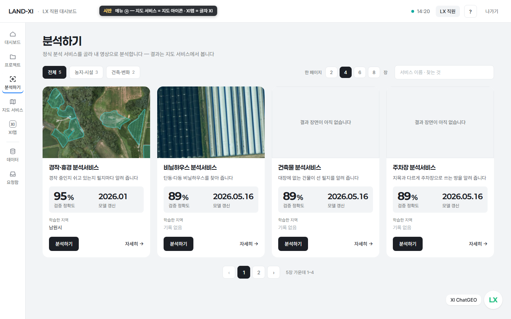

[시안][메뉴] LX 직원 왼쪽 메뉴 — 대시보드 · 프로젝트 · 분석하기 · 지도 서비스 · XI맵 | 데이터 · 요청함
지금
지금 메뉴는 홈(→대시보드로 고침) · 프로젝트 · 분석하기 · 서비스 카드 · 데이터 · 요청함이고, XI맵은 위 머리줄 글자 단추에만 있습니다. 분석 결과가 가는 '지도 서비스'가 메뉴에 없어 결과를 XI맵으로 보냈습니다.
제안
분석 흐름 순서로 다섯 칸(대시보드 · 프로젝트 · 분석하기 · 지도 서비스 · XI맵) + 구분선 + 둘(데이터 · 요청함). '서비스 카드'는 빠집니다 — 서비스 공개는 프로젝트 마지막 단계, 공개된 서비스 관리는 LX 관리자 화면. 머리줄의 XI맵 글자 단추는 메뉴로 들어오니 뺍니다. 새 아이콘은 그리지 않고 지금 메뉴 레일에 있는 그림만 씁니다. ⓐ 지도 서비스 = 지도 그림, XI맵 = 글자 'XI' 표기(XI ChatGEO의 'LX' 글자 표기와 같은 방식) / ⓑ XI맵 = 지도 그림, 지도 서비스 = 바둑판 그림. 추천 ⓐ — 지도 서비스가 '지도'이고 XI맵은 이름 자체가 표기가 됩니다. 말 맞추기 한 줄(원칙 152): 대시보드 '프로젝트 진행 현황' 네 번째 칸과 프로젝트 마지막 단계가 지금 '서비스 공개'인데, 직원은 신청하고 관리자가 승인하는 흐름이면 '배포 신청'(신청 → 승인 상태가 보이는 이름)으로 맞추는 안을 함께 올립니다 — 신청 · 승인 · 기관 공유 화면은 다음 시안에서.
보는 곳
- app.land-xi.dev/landxi/v3/lx-analyze/아이디 test@lx.or.kr · 임시 비밀번호지금 왼쪽 메뉴(홈→대시보드만 고쳐진 상태)
